Introduction
Ce rapport accompagne le relevé d'audit effectué sur le site « data.public.lu ».
La méthodologie d'audit employée repose sur le référentiel RGAA 4.1, consultable à l'adresse suivante : https://accessibilite.public.lu/fr/rgaa4.1/criteres.html
L'audit a été réalisé au moyen de l'utilisation de navigateurs web et d'outils spécialisés. Des tests de restitution ont également été effectués conformément à la base de référence définie par le RGAA 4.1.
Échantillon
L'audit a porté sur un échantillon de 14 pages pour le niveau double A (AA) :
| Nº page | Titre de la page | URL |
|---|---|---|
| P01 | Accueil | https://staging.data.public.lu/fr/ |
| P02 | Conditions Générales d'Utilisation de la plateforme | https://staging.data.public.lu/fr/pages/legal/terms/ |
| P03 | Authentification | https://staging.data.public.lu/fr/login?next=%2Ffr%2Fregister |
| P04 | Accessibilité | https://staging.data.public.lu/fr/pages/legal/declaration/ |
| P05 | Jeux de données | https://staging.data.public.lu/fr/datasets/ |
| P06 | Jeu de données | https://staging.data.public.lu/fr/datasets/electricity-in-luxembourg-actual-total-load/ |
| P07 | Réutilisations | https://staging.data.public.lu/fr/reuses/ |
| P08 | Réutilisation | https://staging.data.public.lu/fr/reuses/safe-crossing-project-potentially-unsafe-pedestrian-crossings-in-luxembourg-city/ |
| P09 | Organisations | https://staging.data.public.lu/fr/organizations/ |
| P10 | Organisation | https://staging.data.public.lu/fr/organizations/direction-de-laviation-civile/ |
| P11 | Articles | https://staging.data.public.lu/fr/posts/ |
| P12 | Article | https://staging.data.public.lu/fr/posts/hackathon-open-data-x-housing-wrap-up/ |
| P13 | Suivi d'audience et vie privée | https://staging.data.public.lu/fr/pages/legal/privacy/ |
| P14 | Tutoriel de l'API | https://staging.data.public.lu/fr/pages/api-tutorial/ |
Environnement de test (base de référence)
Quelques critères RGAA, notamment ceux de la thématique JavaScript, incluent des tests de restitution à effectuer sur des technologies d'assistance associées à des navigateurs et des systèmes d'exploitation. Pour qu'un dispositif HTML / WAI-ARIA ou son alternative soit considéré comme compatible avec l'accessibilité, il faut qu'il soit pleinement fonctionnel, en termes de restitution et de fonctionnalités sur certaines combinaisons. Vous trouverez une explication détaillée de cet environnement de tests dans le document du RGAA 4.1.
Nous détaillons ci-dessous la base de référence utilisée pour réaliser les tests de restitution des composants du site.
Environnement de test – ordinateur
| Technologie d'assistance | Navigateur |
|---|---|
| NVDA 2021.3 | Firefox 104.0 |
| JAWS 2021 | Firefox 104.0 |
| VoiceOver (macOS Monterey version 12.5) | Safari 15.6 |
Environnement de test — mobile
| Système d'exploitation | Technologie d'assistance | Navigateur |
|---|---|---|
| Android natif 12 | TalkBack (dernière version) | Chrome 104 |
| iPhone 15.5 | VoiceOver | Safari |
Accessibilité des pages auditées
Le site présente un niveau général d'accessibilité moyen.
Le niveau moyen de conformité relevé atteint 56,36 % de conformité sur l'ensemble des pages auditées, avec 48,78 % de conformité au niveau simple A (A) et 78,57 % de conformité au niveau double A (AA).
Le site est partiellement conforme.
Conformité RGAA 4.1 du site
| Conforme | Non conforme | |
|---|---|---|
| A | 48,78 % | 51,22 % |
| AA (légal) | 56,36 % | 43,64 % |
Note sur le calcul de conformité
La conformité globale (Tableau « Conformité RGAA 4.1 ») est calculée de la manière suivante : C / (C+NC). C'est le nombre de critères conformes et NC le nombre de critères non conformes.
C'est ce nombre qui constitue la référence légale. Il représente le taux de conformité de l'échantillon.
Il est normal que le taux de conformité global diffère sensiblement du taux de conformité par page. En effet, un critère NC (non conforme) sur une page rend le critère non conforme sur l'ensemble de l'échantillon.
Pour qu'un site soit conforme (100 % des critères applicables sont conformes au niveau AA), il est nécessaire que le taux de conformité par page équivaille à 100 %.
Conformité pour chaque niveau
| Conforme | Non conforme | |
|---|---|---|
| A | 48,78 % | 51,22 % |
| AA | 78,57 % | 21,43 % |
Moyenne par pages
| Nº page | Titre de la page | %C |
|---|---|---|
| P01 | Accueil | 73,81 % |
| P02 | Conditions Générales d'Utilisation de la plateforme | 96,43 % |
| P03 | Authentification | 82,35 % |
| P04 | Accessibilité | 93,33 % |
| P05 | Jeux de données | 72,50 % |
| P06 | Jeu de données | 81,40 % |
| P07 | Réutilisations | 92,50 % |
| P08 | Réutilisation | 94,59 % |
| P09 | Organisations | 94,44 % |
| P10 | Organisation | 93,55 % |
| P11 | Articles | 100,00 % |
| P12 | Article | 96,15 % |
| P13 | Suivi d'audience et vie privée | 93,33 % |
| P14 | Tutoriel de l'API | 100,00 % |
Moyenne par thématiques
| Thématiques | C | NC |
|---|---|---|
| Images | 33,33 % | 66,67 % |
| Cadres | 100,00 % | 0,00 % |
| Couleurs | 66,67 % | 33,33 % |
| Multimédia | 0,00 % | 0,00 % |
| Tableaux | 0,00 % | 0,00 % |
| Liens | 0,00 % | 100,00 % |
| Script | 50,00 % | 50,00 % |
| Éléments obligatoires | 66,67 % | 33,33 % |
| Structuration | 0,00 % | 100,00 % |
| Présentation | 58,33 % | 41,67 % |
| Formulaires | 42,86 % | 57,14 % |
| Navigation | 71,43 % | 28,57 % |
| Consultation | 100,00 % | 0,00 % |
Impacts utilisateurs
Les principales personnes impactées sont les personnes aveugles et celles qui naviguent au clavier. Les problèmes liés aux scripts, à l'API ARIA et aux formulaires rendent parfois difficile l'utilisation du site par ces utilisateurs.
Contenus dérogés
La dérogation est un moyen d'exclure du champ d'application du référentiel des contenus particuliers. Les cas de dérogations sont très encadrés, vous en trouverez le détail dans le guide des dérogations.
Les contenus suivants n'entrent pas dans le calcul de la conformité ni dans le périmètre des éléments à rendre accessibles, ils sont dérogés :
- Il manque parfois des indications de langue dans les jeux de données, réutilisations, organisations et les pages de listes où ces contenus apparaissent. Ces contenus sont saisis par des contributeurs externes et non contrôlés par le SIP ;
- La solution technique du site ne permet pas de gérer les changements de langue dans les titres des articles.
Note sur le relevé des non-conformités
Ne sont cités dans ce rapport que quelques exemples issus du relevé des non-conformités.
De plus, toutes les occurrences d'une non-conformité ne sont pas listées dans le relevé.
Avis
Le site comporte une variété de non-conformités mais celles-ci sont très ponctuelles. Aucune difficulté particulière n'a été constatée concernant les correctifs à apporter.
Les non-conformités les plus bloquantes pour les utilisateurs concernent :
- Les scripts et l'utilisation de l'API ARIA (notamment les systèmes d'onglets et les listes avec autocomplétion) ;
- La structure HTML et les landmarks ARIA ;
- Les titres et les listes ;
- Des contenus tronqués lorsque les pages sont zoomées à 400% ;
- Les formulaires (étiquettes des champs, intitulés de boutons et contrôle de saisie).
Ce sont donc ces points qui devront nécessiter une attention toute particulière et qui demanderont le plus d'efforts.
Annexe technique
Images
Recommandation
Donner à chaque image porteuse d'information une alternative textuelle pertinente et une description détaillée si nécessaire. Lier les légendes à leurs images. Remplacer les images textes par du texte stylé lorsque c'est possible.
Images de décoration
Le site contient des images de décoration qui ne sont pas correctement identifiées, soit parce qu'elles ont une alternative renseignée, soit parce qu'il manque les attributs nécessaires pour qu'elles soient ignorées par les technologies d'assistance.
Ces images n'apportent aucune information et peuvent causer des problèmes de compréhension pour les aveugles et les grands malvoyants qui vont écouter les contenus avec un lecteur d'écran.
- Dans le cas d'une image insérée avec la balise
img, mettre unalt="". - Dans le cas d'une image insérée avec la balise
svg, mettre une propriété ARIAaria-hidden="true".
Constats sur le site
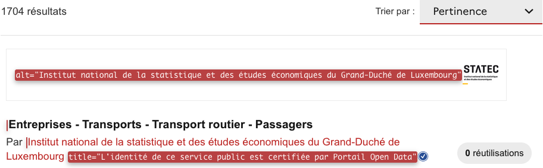Page « Jeux de données », les images des logos des résultats sont redondantes par rapport au contenu des résultats, elles sont donc décoratives.
Images porteuses d'information
Il est nécessaire de donner une alternative pertinente dans le cas où la suppression de l'image entraînerait un problème de compréhension des contenus.
Constats sur le site
Page « Jeux de données », les images <svg> « L'identité de ce service public est certifiée par Portail Open Data » n'ont pas d'alternative.
Couleurs
Recommandation
Ne pas donner l'information uniquement par la couleur et utiliser des contrastes de couleurs suffisamment élevés pour les textes et les composants d'interface.
Contraste des composants d'interface
Les composants d'interface, les illustrations porteuses d'information ou encore les mises en couleurs porteuses d'information doivent être suffisamment contrastés pour être perçus par les utilisateurs ayant des troubles de perception des couleurs. Par exemple, une icône porteuse d'information devra avoir un rapport de contraste avec la couleur de fond de 3. De même, pour un champ de saisie de formulaire, dont la zone active est matérialisée par sa bordure, alors la couleur de cette bordure devra avoir un rapport de contraste de 3 avec la couleur de fond de la page.
Constats sur le site
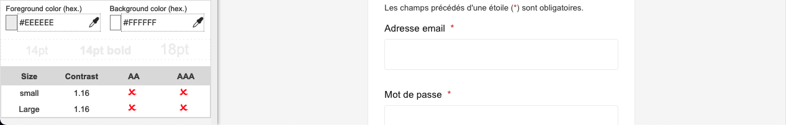Page « Authentification », la couleur #EEEEEE de la bordure des champs de formulaire sur le fond #FFFFFF (ratio : 1.16).
Liens
Recommandation :
Donner des intitulés de lien explicites, grâce à des informations de contexte notamment, utiliser le titre de lien le moins possible. S'assurer que le nom visible est contenu dans le nom accessible.
Pertinence des intitulés
Un lien possède généralement un intitulé et un contexte. L'intitulé est le texte présent dans la balise <a> (ou la valeur de l'attribut alt de l'image dans le cas d'un lien-image) et le contexte du lien est représenté par le titre qui précède, le titre du lien (l'infobulle) ou tout simplement le texte dans lequel il est inséré.
Pour être considéré comme pertinent, l'intitulé d'un lien doit permettre de comprendre sa destination en prenant en compte son contexte.
Constats sur le site
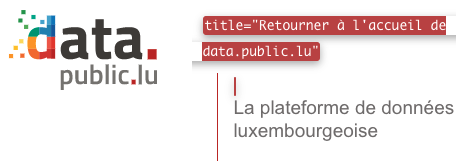 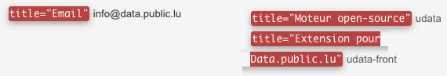Page d'accueil, ces liens possèdent des attributs title qui ne reprennent pas le nom accessible du lien :
- Le lien « La plateforme de données luxembourgeoise » de l'en-tête avec
title="Retourner à l'accueil de data.public.lu"; - Le lien « info@data.public.lu » du pied de page avec
title="Email"; - Le lien « udata » du pied de page avec
title="Moteur open-source"; - Le lien « udata-front » du pied de page avec
title="Extension pour Data.public.lu".
Présence d'intitulés
Un lien doit toujours posséder un intitulé permettant à l'utilisateur de comprendre sa destination. Les liens contenant uniquement des objets graphiques (images, icônes, etc.) posent souvent problème pour les personnes aveugles.
Pour ces liens, la technique pour fournir un intitulé dépend des cas :
- Si ces liens-images sont construits avec des balises images (
<img />), renseignez l'alternative de l'image (par exemple :<a href="https://twitter.com/example"><img src="path/to/img/png" alt="Suivez-nous sur Twitter" /></a>) - Si ces liens-images sont construits avec des balises SVG (
<svg>), alors ajoutez sur cette balise unrole="img"pour indiquer aux lecteurs d'écran qu'il s'agit bien d'une image et un intitulé pararia-label="Suivez-nous sur Twitter".
Constats sur le site
Page d'accueil, dans le pied de page, les liens images « Le Gouvernement du Grand-Duché de Luxembourg - Service Information et Presse » et « Retour à l’accueil de data.public.lu » n'ont pas d'intitulé entre leurs balises <a> et </a>
Scripts
Recommandation :
Donner si nécessaire à chaque script une alternative pertinente. Rendre possible le contrôle de chaque code script au moins par le clavier et la souris et s'assurer de leur compatibilité avec les technologies d'assistance. Identifier les messages de statut lorsque c'est nécessaire.
Utilisation inappropriée de propriétés ARIA
Les propriétés ARIA sont chargées de transmettre des informations indispensables à la restitution et l'utilisation des composants développés avec JavaScript aux technologies d'assistance. Une utilisation inappropriée peut poser des problèmes de restitution notamment.
Constats sur le site
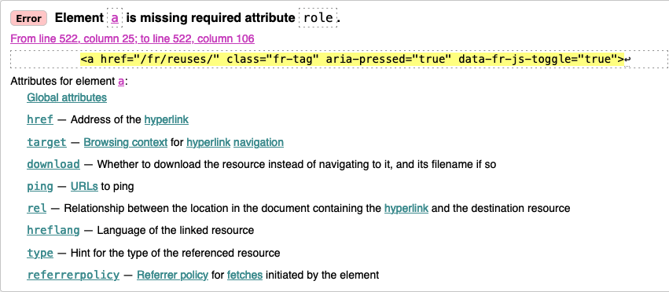Page « Réutilisations », la propriété aria-pressed n'est pas pertinente sur le lien « Tout » de la liste des filtres parce qu'il s'agit d'un lien et non d'un bouton. La propriété aria-current="page" serait plus pertinente.
Fenêtres modales
Constats sur le site
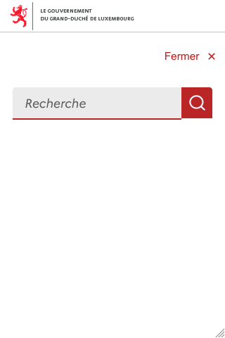Page d'accueil, sur mobile, la propriété aria-labelledby de la fenêtre modale du formulaire de recherche est vide.
Autocomplétion
Les champs de saisie qui proposent des listes de résultats au fil de la saisie ne sont pas toujours accessibles aux utilisateurs qui ne perçoivent pas l’écran ou ne le perçoivent pas dans sa totalité. En effet, ils n’ont pas l’information que des résultats sont apparus par exemple, ou encore que la recherche ne retourne aucun résultat.
Constats sur le site
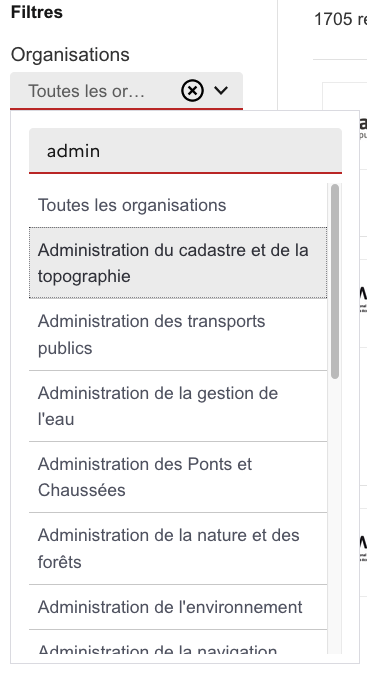Page « Jeux de données », les champs des filtres utilisent une autocomplétion qui ne respecte pas les principes du motif de conception ARIA Combobox : lorsque l'on parcourt la liste des suggestions et que l'on tape du texte, on ne reprend pas le focus dans le champ de saisie.
Systèmes d'onglets
Constats sur le site
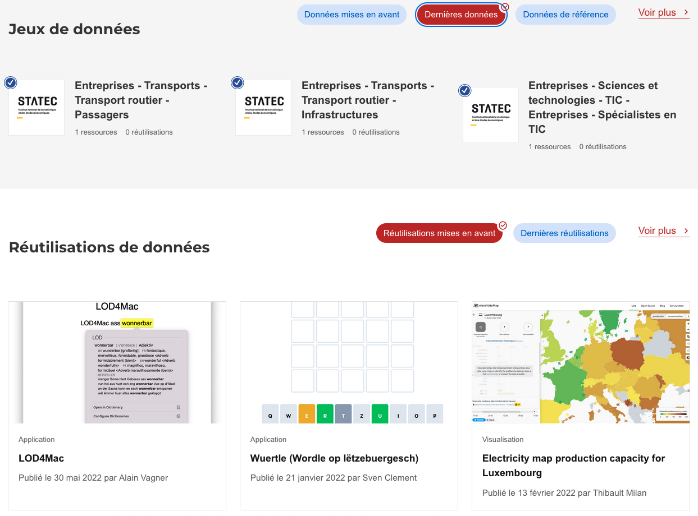Page d'accueil, les systèmes d'onglets « Jeux de données » et « Réutilisations de données » sont incomplets ou incorrects :
- Il manque une propriété
aria-labelledbyouaria-labelaux éléments qui ont lerole="tablist"; - La propriété
aria-pressedn'est pas autorisée sur les onglets ; - Il manque une propriété
aria-labelledbyouaria-labelaux éléments qui ont lerole="tabpanel"; - Les interactions au clavier ne fonctionnent pas, on devrait pouvoir passer d'un onglet à l'autre à l'aide des touches fléchées et les éléments avec le
role="tabpanel"devraient pouvoir prendre le focus.
Changement de contexte
Un changement de contexte est une situation où un utilisateur ne peut pas anticiper le fonctionnement d'une fonctionnalité lorsque celle-ci ouvre une nouvelle page, valide un formulaire ou ajoute ou modifie du contenu dans la page par exemple.
Cela concerne plus spécifiquement les fonctionnalités qui se lancent sans que l'utilisateur puisse les anticiper comme, par exemple, la soumission automatique d’un champ de formulaire sur la sélection d'un item ou lorsque l'utilisateur quitte un champ de saisie.
Constats sur le site
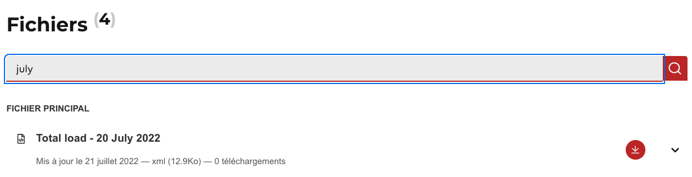Page « Jeu de données », lors de la saisie dans le champ « Rechercher dans les ressources », le formulaire est soumis automatiquement sans que l'utilisateur en soit informé. Il faudrait mettre en place l'une de ces trois solutions :
- Compléter l'étiquette du champ pour expliquer que le formulaire est soumis automatiquement ;
- Ne permettre la soumission du formulaire que lors de l'activation du bouton « Recherche » ;
- Ajouter un
role="status"au titre « Fichier (29) » afin que la mise à jour du nombre de résultats soit restituée à l'utilisateur.
Éléments obligatoires
Recommandation
Vérifier que chaque page web a un code valide selon le type de document, un titre pertinent et une indication de langue par défaut. Vérifier que les balises ne sont pas utilisées uniquement à des fins de présentation, que les changements de langues et de direction de sens de lecture sont indiqués.
Titre de la page
Le titre de la page (visible dans l'onglet du navigateur) est un élément de repère dans le site web. Pour les utilisateurs de lecteurs d'écran (utilisateurs aveugles ou grands malvoyants), c'est le premier élément restitué par le lecteur d'écran au chargement de la page. Cela permet de donner du contexte aux utilisateurs qui n'ont pas une vision globale de la page. C'est l'information à laquelle les utilisateurs avec des troubles de la mémoire accèdent lorsqu'ils naviguent avec l'historique de navigation du navigateur. Il est donc essentiel d'avoir des titres de pages pertinents, concis et très souvent uniques dans le site, et qui reflètent de la position de l'utilisateur dans le site web.
Il est des cas particuliers, comme les pages dont le contenu est une liste de résultats paginés (ex. : les résultats de recherche), pour lesquels le titre doit refléter la nature de la recherche ainsi que le numéro de page en cours de consultation.
Constats sur le site
Page « Authentification », le titre de la page est identique à celui de la page d'accueil.
Page « Jeux de données », lors d'une recherche ou de la navigation entre les différentes pages numérotées, le titre de la page ne reflète ni les termes recherchés ni le numéro de la page en cours.
Indication de langue
Les lecteurs d'écran utilisent les indications de langue pour vocaliser le contenu dans la langue définie. La page doit contenir une définition de langue principale (généralement sur l'élément html).
Ensuite, les éléments de langue étrangère présents dans le contenu doivent être signalés. Si on trouve dans la page des termes absents du dictionnaire de la langue principale de la page, il faut les identifier afin que le lecteur d'écran les restitue dans la langue appropriée. En effet, une mauvaise prononciation pourrait mener à des incompréhensions pour les utilisateurs qui reposent uniquement sur des restitutions orales. Les noms propres sont exclus de cette obligation.
Constats sur le site
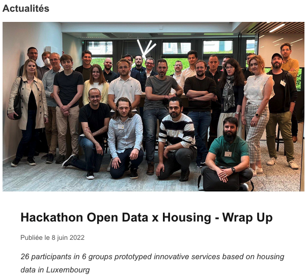 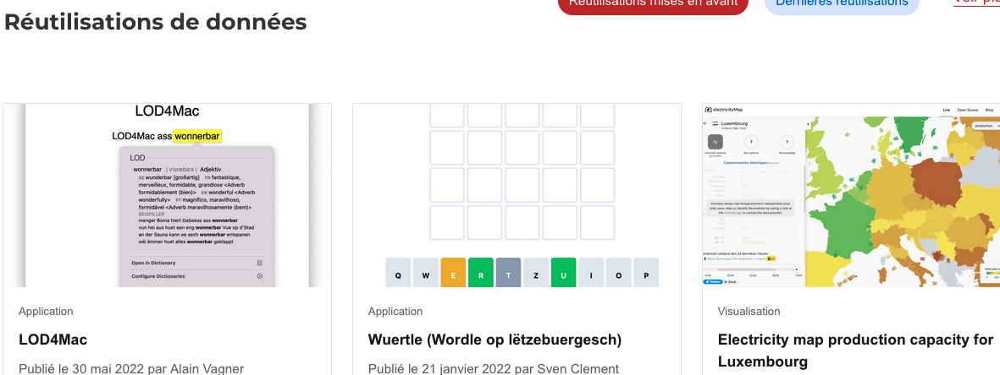
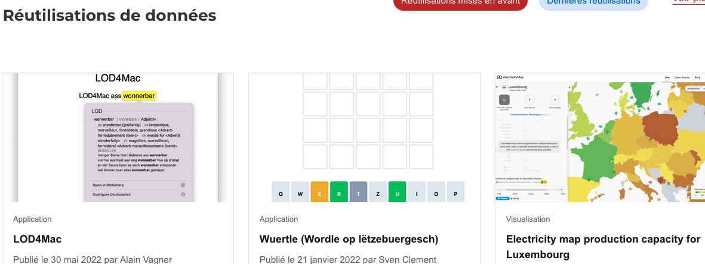
Page d'accueil, on trouve des textes en Anglais et en Luxembourgeois dont la langue n'est pas indiquée :
- Dans le bloc « Actualités » ;
- Dans le bloc « Jeux de données » ;
- Dans le bloc « Réutilisations de données ».
Validité du code
Les technologies d'assistance, comme les lecteurs d'écran ou les systèmes de contrôle à la voix, s'appuient sur le code des pages pour générer les restitutions et les interactions avec l'utilisateur. Un lecteur d'écran va exploiter le code HTML fourni par le navigateur et les informations accessibles au moyen des API d'accessibilité du système.
Si le code comporte des erreurs (balises mal fermées par exemple), il y a un risque que les fonctionnalités du lecteur d'écran soient impactées, comme la navigation de lien en lien par exemple.
Pour vérifier la conformité d'une page, vous pouvez utiliser le validateur mis à disposition par le W3C.
Constats sur le site
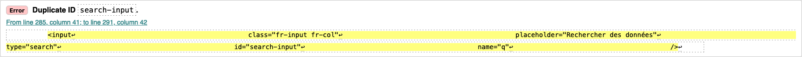Page d'accueil, l'identifiant "search-input" est dupliqué.
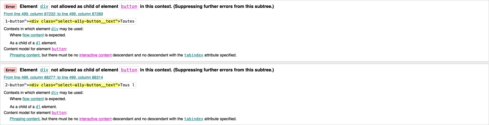
Page « Jeux de données » :
- Valeurs d'identifiant dupliquées :
id="sort-search"; - Erreurs d'imbrication de balises : des
<div>dans des<button>et un<nav>dans un<ul>.
Balises utilisées à des fins de présentation
Les éléments de structure HTML ont chacun une sémantique particulière (paragraphe, titre, image, lien, etc.). Si les éléments sont mal employés (détournés de leur utilité première), cela peut poser des problèmes aux utilisateurs qui naviguent à l'aide d'une technologie d'assistance (lecteur d'écran, plug-in…). En effet, les technologies d'assistance disposent de raccourcis permettant de naviguer rapidement entre certains types d'éléments (paragraphes, titres, listes, etc.). Si ces éléments sont mal employés, les utilisateurs ne peuvent pas utiliser ces fonctionnalités de repère et de navigation dans le contenu.
Constats sur le site
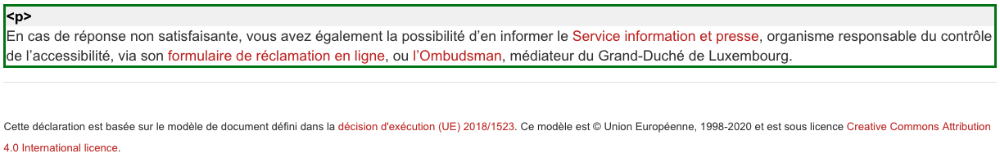Page « Accessibilité », le texte « Cette déclaration est basée sur le modèle de document défini dans la décision d'exécution (UE) 2018/1523. Ce modèle est © Union Européenne, 1998-2020 et est sous licence Creative Commons Attribution 4.0 International licence. » est uniquement structuré à l'aide de <div>.
Page « Article », le texte « 26 participants in 6 groups prototyped innovative services based on housing data in Luxembourg » est structuré à l'aide d'une balise <blockquote>. S'il s'agit vraiment d'une citation, ne rien faire et nous le remonter. Sinon, remplacer la balise <blockquote> par une balise <p>.
Structuration de l'information
Recommandation
Utiliser des titres, des listes, des abréviations et des citations pour structurer l'information. S'assurer que la structure du document est cohérente.
Titres
Le titrage des contenus est une étape importante dans la structuration des contenus. Cela répond à deux besoins :
- identifier rapidement un contenu recherché ;
- naviguer rapidement dans le contenu en se déplaçant de titre en titre.
Un titrage correct fournit à l'utilisateur d'un lecteur d'écran un plan du document et lui permet de naviguer de titre en titre pour se déplacer plus rapidement dans le contenu de la page.
Pour valider la structure de votre page, vous pouvez utiliser l'extension Firefox HeadingsMap. Lorsque l'extension est active, sélectionnez l'onglet « Headings » et vérifiez la cohérence et l'imbrication des titres.
Constats sur le site
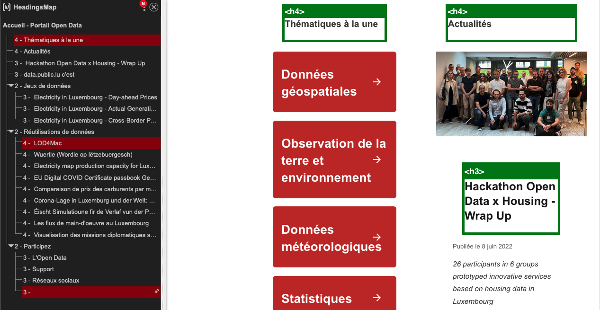 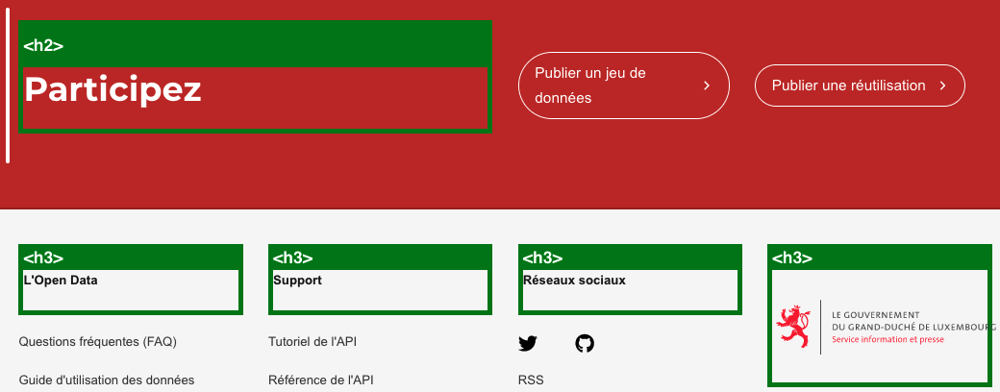Page d'accueil, la hiérarchie des titres n'est pas cohérente :
- Le texte « Thématiques à la une » doit être un titre de niveau 2 ;
- Le texte « Actualités » doit être un titre de niveau 2 ;
- Le texte « data.public.lu c'est » doit être un titre de niveau 2 ;
- Le texte « L'Open Data » doit être un titre de niveau 2 ;
- Le texte « Support » doit être un titre de niveau 2 ;
- Le texte « Réseaux sociaux » doit être un titre de niveau 2.
Listes
La structuration en listes permet aux utilisateurs de lecteurs d'écran de consulter plus rapidement le contenu, grâce à des raccourcis spécifiques, et d'accéder directement à une liste ou de la passer sans avoir à en parcourir tous les items.
Constats sur le site
 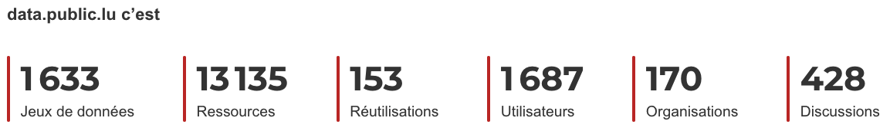
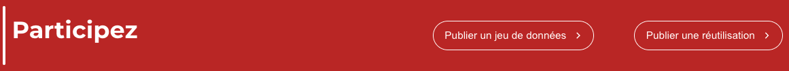
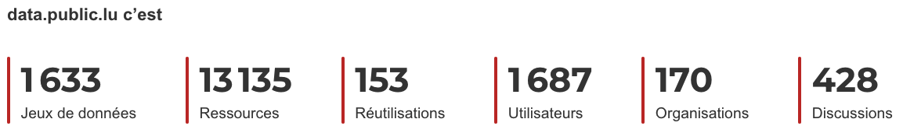
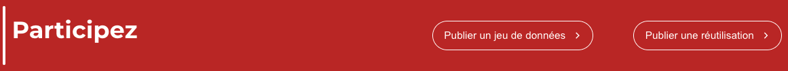
Page d'accueil, ces éléments ne sont pas structurés sous forme de liste :
- La liste de liens du bloc « Thématiques à la une » ;
- La liste de données du bloc « data.public.lu c'est » ;
- La liste de liens du bloc « Participez ».
Structure du document
L'utilisation correcte des balises HTML5 et des landmarks ARIA va permettre d'enrichir la restitution pour les utilisateurs aveugles qui ne perçoivent pas les mises en forme : la navigation principale ne sera plus perçue simplement comme une liste de liens, elle sera restituée à l'utilisateur comme un élément de navigation, par l'intermédiaire du lecteur d'écran qui annoncera « région » ou « repère ».
De plus, ces marqueurs sémantiques vont également constituer des éléments de navigation rapide dans la page. Grâce à un raccourci clavier, certains utilisateurs vont pouvoir naviguer plus rapidement entre les régions qui auront été ainsi identifiées.
Constats sur le site
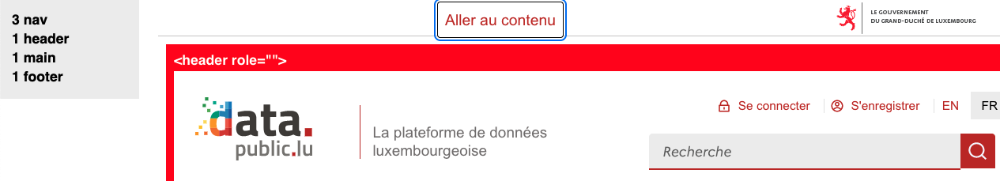 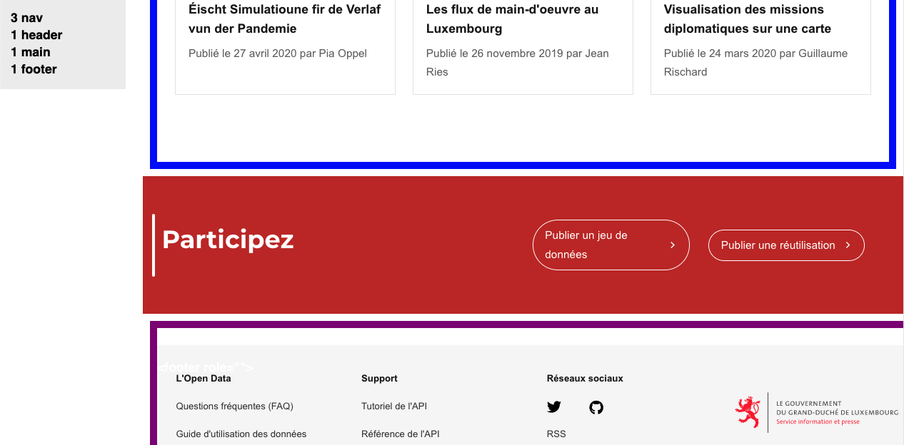
Page d'accueil :
- Le lien « Aller au contenu » ne se trouve pas à l'intérieur d'une zone de navigation ;
- Le bloc « Participez » ne fait pas partie du pied de page alors qu'il s'agit d'un élément récurrent sur le site ;
- Sur mobile, le menu principal n'est pas identifiable tant que le bouton « Ouvrir le menu » n'a pas été activé.
Page « Jeux de données », le fil d'Ariane n'est pas identifié comme zone de navigation.
Présentation de l'information
Recommandation
Utiliser des feuilles de styles pour contrôler la présentation de l'information. Vérifier l'effet de l'agrandissement des tailles des caractères sur la lisibilité. S'assurer que les liens sont correctement identifiables, que la prise de focus est signalée, que l'interlignage est suffisant et donner la possibilité à l'utilisateur de contrôler la justification des textes. S'assurer que les textes cachés sont correctement restitués et que l'information n'est pas donnée uniquement par la forme ou la position d'un élément. S'assurer que les contenus sont lisibles et utilisables dans une fenêtre de largeur réduite. Veiller à ce que l'application de paramètres typographiques n'entraîne pas la perte de contenu ou de fonctionnalité. S'assurer que les contenus qui apparaissent au survol et à la prise de focus puissent être contrôlés par l'utilisateur.
Utilisation de CSS exclusivement
Certains utilisateurs qui présentent des troubles de la lecture (personnes dyslexiques par exemple), vont avoir besoin d'adapter la présentation des pages avec leurs propres mises en forme. Cela est possible sans difficulté si le site web utilise exclusivement les feuilles de styles CSS pour réaliser les mises en forme. Cependant, l'utilisation d'attributs et balises HTML de mise en forme rend ces adaptations plus compliquées, sinon impossibles.
Le RGAA donne la liste des attributs et balises qu'il est interdit d'utiliser.
Constats sur le site
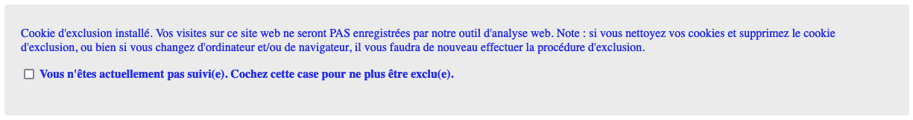Page « Suivi d'audience et vie privée », l'attribut height sur le cadre <iframe>.
Contenu visible sans les feuilles de styles
Des contenus informatifs insérés avec CSS (avec des images de fond contenant du texte en image) peuvent ne pas être restitués par les lecteurs d'écran ou les systèmes de loupes vocalisés.
Constats sur le site
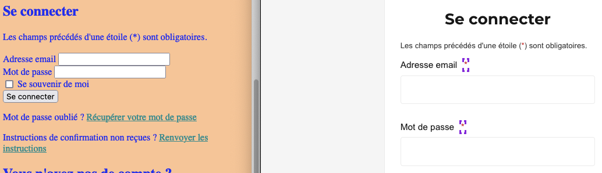Page « Authentification », les astérisques (*) qui indiquent les champs obligatoires sont insérés en CSS.
Contenu compréhensible sans les styles : ordre visible vs ordre réel
Un utilisateur aveugle n'a pas accès à la mise en forme qui parfois est porteuse d'informations importantes, notamment des relations entre les éléments.
Il est important de ne pas implémenter les textes dans l'ordre visuel, mais bien dans l'ordre logique de dépendance et hiérarchie des éléments.
Le contenu doit rester compréhensible sans les feuilles de styles (vous pouvez tester vos contenus en désactivant les feuilles de styles).
Constats sur le site
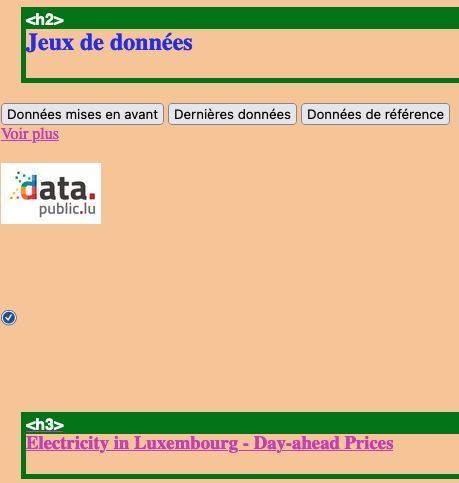Page d'accueil, dans le bloc « Jeux de données », les images de chaque élément se trouvent avant le titre auquel elles réfèrent dans le code source. Par exemple les images « Open Data Lëtzebuerg » et « L'identité de ce service public est certifiée par Portail Open Data » se trouvent avant le titre « Electricity in Luxembourg - Day-ahead Prices », ce qui fait que plusieurs liens de ce bloc commencent par le texte « Open Data Lëtzebuerg L'identité de ce service public est certifiée par Portail Open Data ».
Liens dont la nature n'est pas évidente
Un lien dont la nature n'est pas évidente est un lien qui peut être confondu avec un texte normal lorsqu'il est signalé uniquement par la couleur par certains utilisateurs ne percevant pas ou mal les couleurs.
Les personnes déficientes visuelles peuvent ignorer ces liens puisque ceux-ci ne sont pas visuellement discernables du reste du texte dans lequel ils sont insérés.
Constats sur le site
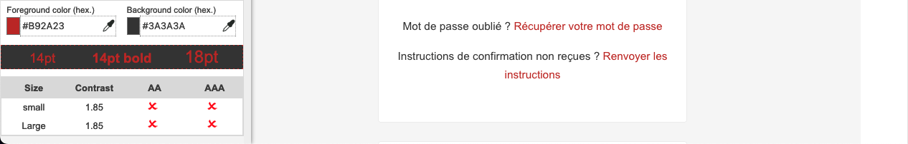Page « Authentification », les liens « Récupérer votre mot de passe » et « Renvoyer les instructions » ne sont pas suffisamment contrastés par rapport au texte environnant et ne disposent pas d'indication visuelle au survol.
Largeur réduite
Il s'agit ici de tester la capacité des contenus à se réorganiser lorsqu'un utilisateur malvoyant doit réaliser un zoom graphique de 400%. À ce titre, on teste la lisibilité des contenus dans une fenêtre de largeur réduite à 320px.
On s'assure que l'utilisateur a accès à tous les contenus et que tous les contenus sont lisibles sans avoir recours à la barre de défilement horizontale.
Constats sur le site
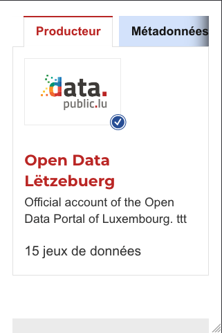Page « Jeu de données », l'onglet « Actions » n'est pas visible.
Formulaires
Recommandation :
Associer pour chaque formulaire chacun de ses champs à son étiquette, grouper les champs dans des blocs d'informations de même nature, regrouper les items de même nature dans les listes de choix, donner à chaque bouton un intitulé explicite. Vérifier la présence d'aide à la saisie, s'assurer que le contrôle de saisie est accessible et que l'utilisateur peut contrôler les données à caractère financier, juridique ou personnel.
Étiquettes et champs
Les champs de formulaires doivent tous posséder des étiquettes correctement reliées.
Une étiquette de champ est un texte situé à proximité du champ de formulaire qui permet de connaître la nature, le type ou le format des informations attendues.
De cette manière, lorsqu'un utilisateur entre dans le champ de saisie avec un lecteur d'écran, le lecteur d'écran lit le contenu de l'étiquette. L'utilisateur comprend alors ce qu'il doit saisir.
Sans cela, même si une étiquette est présente visuellement, l'utilisateur entendra « champ de saisie vide » en entrant dans le champ et ne saura donc pas quoi saisir.
Constats sur le site
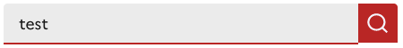Page d'accueil, l'étiquette du champ « Rechercher des données » n'est pas visible, il manque donc un attribut title au champ qui reprend le contenu de l'étiquette.
Page « Jeux de données », les champs des filtres ne possèdent pas d'étiquette visible : lors de la saisie dans le champ « Chercher une organisation » par exemple, aucune étiquette n'est visible.
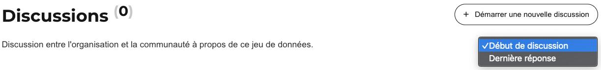Page « Jeu de données », la liste de sélection « Trier les discussions par » ne possède pas d'étiquette visible.
Intitulés de bouton pertinents
Les boutons qui permettent d'interagir avec les formulaires doivent avoir des intitulés pertinents pour que l'utilisateur comprenne l'action du bouton.
Ces intitulés sont essentiels pour les personnes aveugles, afin qu'elles soient sûres de l'action qu'elles s'apprêtent à réaliser.
Constats sur le site
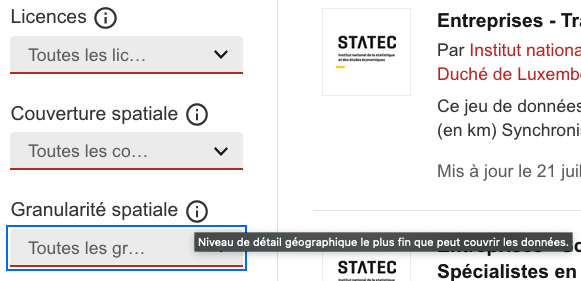Page « Jeux de données », certains filtres possèdent des informations additionnelles disponibles au moyen d'un attribut title, mais celles-ci ne sont pas disponibles à moins que l'utilisateur ne consulte le <label>.
Afin que les informations additionnelles soient restituées lors du focus sur les boutons « Toutes les licences », « Toutes les couvertures », etc., ajouter au <label> un élément positionné hors écran sur le modèle <span class="sr-only">Niveau de détail géographique le plus fin que peut couvrir les données.</span>.
Contrôle de saisie et aide à la saisie
Tous les champs obligatoires doivent être identifiés préalablement à toute validation de l’utilisateur.
Pour les champs qui attendent un format de saisie particulier pour être validés, ce format doit être spécifié à l’utilisateur par un passage de texte visible à proximité du champ. De plus, si l’utilisateur commet une erreur sur ce champ, alors le message d’erreur doit présenter un exemple réel de saisie.
Enfin, les messages d'erreur de saisie des champs de formulaire doivent être liés correctement aux champs en erreur.
Constats sur le site
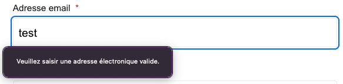Page « Authentification », le champ « Adresse email » attend un format particulier qui n'est pas spécifié et son message d'erreur ne contient pas d'exemple de saisie réelle.
Navigation
Recommandation :
Faciliter la navigation dans un ensemble de pages par au moins deux systèmes de navigation différents (menu de navigation, plan du site ou moteur de recherche), un fil d'Ariane et l'indication de la page active dans le menu de navigation. Identifier les groupes de liens importants et la zone de contenu et donner la possibilité de les éviter par des liens de navigation interne. S'assurer que l'ordre de tabulation est cohérent et que la page ne comporte pas de piège au clavier. S'assurer que les raccourcis clavier qui utilisent une seule touche sont contrôlables par l'utilisateur.
Systèmes de navigation
Le RGAA demande qu'un site propose au moins deux systèmes de navigations différents. Prévoir deux systèmes de navigation au moins est important, car :
- tous les utilisateurs ne naviguent pas de la même manière ;
- certains systèmes de navigation peuvent s'avérer trop complexes à utiliser, en particulier pour les personnes qui ont recours à des technologies d'assistance. Par exemple, un menu de navigation trop riche, comme un méga-menu, peut nécessiter beaucoup d'actions pour un utilisateur qui navigue exclusivement au clavier, et donc rendre sa recherche d'information très laborieuse.
Par systèmes de navigation, on entend tout procédé permettant une navigation dans le site ou dans une page, parmi :
- un menu de navigation principal ;
- un plan du site ;
- un moteur de recherche.
Note : un moteur de recherche est considéré comme un moyen de navigation s'il indexe toutes les pages du site (y compris les pages de type « Mentions légales » ou « Politique de confidentialité »), et non pas seulement un choix limité (par exemple, seulement les offres tarifaires).
Le plan du site, s’il est présent, doit être représentatif de l’arborescence du site et ne proposer que des liens fonctionnels.
Constats sur le site

Le site ne dispose que d'un menu de navigation. Le formulaire de recherche ne peut pas être considéré comme un moteur de recherche global au site parce qu'il ne permet de faire que des recherches ciblées et ne permet pas d'atteindre toutes les pages du site.
Landmarks ARIA
Pour fournir des points de repère aux utilisateurs aveugles, il faudra également implémenter les landmarks ARIA sur les balises HTML 5 de la page.
Constats sur le site
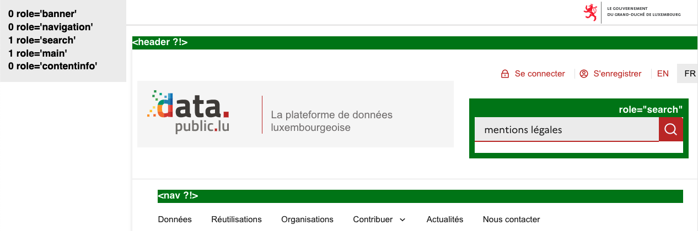Page d'accueil, l'en-tête, le menu principal et le pied de page n'ont pas les rôles ARIA correspondants.
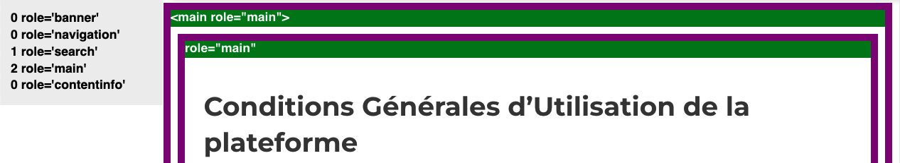Page « Conditions Générales d'Utilisation de la plateforme », la page ne devrait comporter qu'un seul role="main".